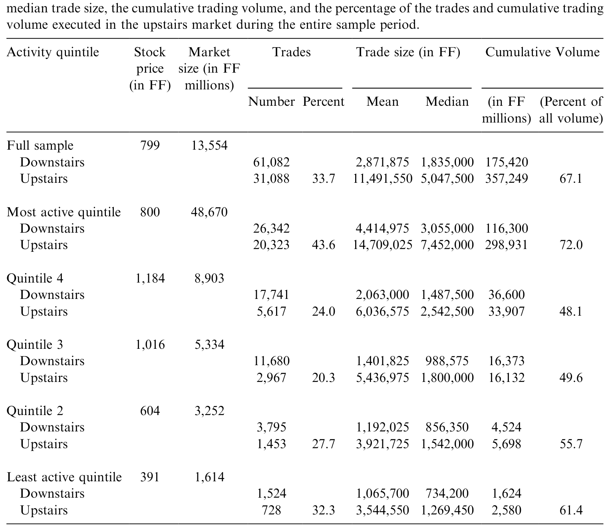
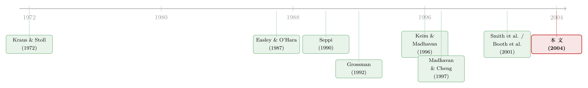

电子交易所，还需要一个「楼上」吗？
本文读的是 Bessembinder & Venkataraman (2004, Journal of Financial Economics)：他们用巴黎证券交易所（Paris Bourse）的数据，第一次为 Grossman (1992) 那个一直「只有理论、没有证据」的猜想做了直接检验——楼上经纪人之所以能压低大单的成交成本，是因为他手里握着一池「没说出口」的流动性。在巴黎，楼上成交的实际成本，平均只有把同样的单子砸进楼下限价订单簿（含隐藏挂单）所要付出的成本的 35%，而且 84% 的样本大单在楼上拿到了比楼下更好的价格。
1 一个看似多余的「楼上」
先从一个让理论家有点尴尬的事实说起。
Glosten (1994) 写过一篇很有名的文章，标题就带着一股自信：《电子化的、公开的限价订单簿，是不是不可避免的？》他论证说，一个集中化的电子限价订单簿（electronic limit order book）几乎是市场结构演化的终点——运营成本低，价格优先、时间优先的规则逼着流动性提供者争先恐后地报价，而且交易一旦集中，每一张订单都能暴露在所有其他挂单面前。听上去，这就是一台完美的撮合机器，不需要任何中间人。
可现实偏偏不配合。几乎每一个股票市场，旁边都站着一个平行的「楼上市场」（upstairs market）：大交易者不把单子直接丢进那台机器，而是找一家券商（楼上经纪人），让他去私下张罗对手方、谈价格。如果电子订单簿真有那么好，为什么这门「人肉撮合」的生意死活不肯退场？
这就是这篇论文标题里那个略带挑衅的问题：一个电子交易所，到底还需不需要一个楼上市场？
要回答它，得先弄清楚楼上经纪人究竟提供了什么楼下机器给不了的东西。理论家给出过两条线索，但很长一段时间里，其中一条始终停留在纸面上。
2 两个理论：Seppi 的「认证」与 Grossman 的「暗池」
围绕楼上市场，理论文献其实分成了两支，关心的是大交易者最在乎的两件事：订单暴露和交易的信息含量。
第一支是 Seppi (1990) 的认证（certification）故事。它的逻辑链条要从 Easley & O'Hara (1987) 说起：一个手握私密信息的人会倾向于交易更大的量，所以流动性提供者面对大单时，会本能地多收一笔「逆向选择」的保费。于是那些纯粹为了流动性、而非信息而交易的大户就有了麻烦——他们明明无毒，却被当成有毒的来收费。Seppi (1990) 说，楼上经纪人可以充当一个甄别器：他能把知情交易者挡在楼上市场门外，于是对剩下的人，流动性提供者愿意收更低的信息费。换句话说，楼上市场是一个给「我没有内幕」盖章的地方。
这一支的实证证据，其实已经攒下了不少。Madhavan & Cheng (1997) 在纽交所（NYSE）地板市场上做过，Smith et al. (2001) 和 Booth et al. (2001) 分别在多伦多（TSE）和赫尔辛基（HSE）这两个楼下已经电子化的市场上做过——他们都发现，楼上经纪人确实通过筛掉信息驱动的交易而降低了逆向选择成本。Seppi 的预言，基本被证实了。
但第二支，Grossman (1992) 的故事，命运就不同了。
Grossman 说的是未表达的流动性（unexpressed liquidity）。很多大投资者的交易意愿，根本不会公开挂出来——一张大额限价单等于免费送给市场一个期权，行情一变就被人「捡漏」（picked off）。所以他们宁可把意愿藏在心里，只告诉一个长期合作的经纪人。这位楼上经纪人，本质上是一座「谁想买、谁想卖」的信息仓库。正因为有一部分交易意愿没有反映在订单簿里，一张大额市价单砸进楼下，就会「走簿」（walk the book）、一路吃掉越来越差的价位、白白绕过那些没挂出来的潜在对手方；而楼上经纪人能直接接通这池暗藏的需求，把成本压下去。
Seppi 和 Grossman 的洞见是相关、却不相同的。认证只对「无毒」的单子有用；而接通暗池流动性，对任何一张大单都有用——不管它知不知情。这意味着，就算 Seppi 的假说不成立，Grossman 的逻辑也可能照样成立。两者不是竞争关系，可以同时为真。（关于「先把单子交给中间商，反而能治好柠檬市场」的另一面，可参见《承诺去交易：为什么「先卖给中间商」反而能治好柠檬市场》。）
问题在于：Grossman 的预言，整整十几年没人能直接检验。 原因很简单——你看不见「没说出口」的流动性，自然也没法度量「如果这张单子砸进楼下，要付多少钱」。所有人都缺一把尺子：内侧报价（inside quote）之外、订单簿深处的那池流动性，到底有多深？
这正是这篇论文真正关键的一步。
3 为什么是巴黎
要量这把尺子，你需要一个近乎「教科书」的实验场。
理论模型在比较时，总是把一个谈判式的楼上市场，和一个纯粹的限价订单簿楼下市场放在一起对照。可现实里的纽交所根本不是纯订单簿：地板经纪人能在不完全暴露的情况下「做」客户的单子，专家（specialist）有时还能猜出谁是交易的发起人（Chakravarty, 2001），而且专家坐在交易人群的正中央，对地板上的隐藏流动性和楼上的暗藏意愿都门儿清。这些特征让纽交所对投资者更有吸引力，却也把楼上和楼下的边界搅浑了——你没法干净地检验楼上市场的理论。
巴黎证券交易所恰好补上了这一刀。它的楼下市场是一台地地道道的电子限价订单簿，没有指定做市商（这一点连多伦多都做不到，TSE 还留着一个指定做市商），几乎就是理论家笔下那个「楼下」。而它的楼上市场，又确确实实在跟这台机器竞争。更妙的是，巴黎数据有两个别处难得的优点：
第一，能重建订单簿。 巴黎的 BDM 数据库（Base de Données de Marché）记录了交易、报价和订单。作者跟着 Biais et al. (1995) 重建限价订单簿的方法，把楼下那本簿子复原出来——不仅是公开显示的流动性，还包括那些承诺给订单簿、却没有显示给市场的隐藏挂单（hidden order，巴黎允许限价单藏一部分，见 Harris, 1996）。有了这本复原的簿子，你就能算一笔反事实账：同样这张在楼上成交的大单，如果改道砸进楼下，会付多少钱？
第二，交叉规则有横截面差异。 巴黎大多数股票的楼上成交，必须在楼下最优买卖报价（best bid-offer, BBO）之内或之上成交；但有一小撮流动性好的「合格股票」（eligible stocks，样本里 80 只），允许大宗交易在 BBO 之外成交。这就给了作者第二个实验：当「可以越过报价成交」这个选项被打开，人们在什么时候、为什么会去用它？
论文脚注里埋了一句俏皮话：Booth et al. (2001) 发现价格发现主要发生在楼下而非楼上，作者说这其实是在回答标题的一个变体——「一个楼上市场，需不需要一个电子交易所？」两个问题，刚好是同一枚硬币的两面。
4 怎么量「成本」：一笔反事实账
论文的核心方法，说穿了就是一道对照题，但每一步都得小心。
先定义什么算一张「大宗交易」。纽交所习惯一刀切：1 万股以上即为 block。但作者认为这不合理——block 的定义应当随股价和交易活跃度而变。理由很直观：1997 年 4 月 1 日，巴黎股票的平均价是 FF800（约 $142），而纽交所只有 $41，且巴黎的股价分布要分散得多。投资者在意的是这笔交易折合多少法郎，而不是多少股。所以作者跟着 Gemmill (1996)、Reiss & Werner (1998) 等人的伦敦市场做法，为每只股票定义一个正常大宗规模（normal block size, NBS）：对那 80 只合格股票直接用交易所的 NBS 定义；其余股票则用深度和成交量来推算。具体地，对第 I 只股票、第 M 月，NBS 取三者之大：
$$ \text{NBS}_{I,M}=\text{MAX}\left[\text{NBS}_1,\ \text{NBS}_2,\ \text{NBS}_3\right] $$
其中 NBS₁ = 7.5 ×（内侧报价的平均深度）、NBS₂ = 2.5% ×（楼下日均成交量）、并要求大宗规模至少 FF500,000——一个经济上不算小的数。
接着，作者把同时上报、把订单簿一路吃穿的多笔成交，按 Biais et al. (1995) 的办法合并成「一张大单」，价格取规模加权平均。最终样本是 225 只巴黎股票、92,170 笔大宗交易，时间跨度从 1997 年 4 月到 1998 年 3 月，取自 SBF-250 指数成分股（剔除批量拍卖股、非普通股、数据异常股后剩 225 只）。一个先声夺人的事实是：楼上市场承担了将近 67% 的大宗成交量——它绝不是个边角料市场。

Table 1: presents sample summary statistics. Sample firms are classified into
有了样本，检验四个假说就有了着落。作者把理论翻译成四条可证伪的命题：
- 假说 I：路由到楼上的交易，总成本低于楼下的同类交易。
- 假说 II：楼上成本更低，部分是因为楼上经纪人能接通只有中介才知道的、未表达且未承诺的流动性。（这就是 Grossman。）
- 假说 III：楼上市场主要被那些能证明自己无毒的交易者使用。（这就是 Seppi。）
- 假说 IV：楼上交易承担更高的固定成本，以补偿中介的搜寻与谈判费用。
5 反转：那池「没说出口」的流动性，真的在
现在到了全篇最关键的结果。
如果 Grossman 是对的，那么楼上成交的实际成本，应该显著低于「把同样的单子砸进楼下订单簿」的反事实成本。作者把这笔账算了出来，而且特意把账算得对自己不利——这一点值得停下来说清楚。
他们重建的订单簿是不完美的：BDM 数据不报告限价单在收盘前的撤单。于是他们复原出来的楼下流动性是被高估的（撤掉的单子还留在簿子里），这意味着「砸进楼下要付的成本」被低估了。换句话说，整个检验是偏向于「证伪 Grossman」的——如果在这种不利设定下还能看到楼上更便宜，那才真叫稳。
结果是：
- 楼上的实际成交成本，平均只有把同样的单子砸进显示流动性所需成本的
20%； - 若把隐藏流动性也算上，楼上成本也只有楼下的
35%； 81%的样本大单，在楼上拿到了比楼下更低的成本；- 另有
3%的样本大单，楼下在任何价位上都凑不齐流动性——根本完不成； - 哪怕在前述偏向证伪的设定下，仍有
84%的样本大单在楼上拿到了比（复原的）楼下订单簿更好的执行。
这就是这篇论文最硬的一块砖：Grossman (1992) 那个十几年悬而未决的猜想，第一次拿到了直接的实证证据。 楼上经纪人确实在接通一池你在订单簿里永远看不见的流动性。一台再精巧的电子撮合机，也撮合不了那些压根没挂出来的意愿。
而 Seppi 的认证故事也同时成立：巴黎数据显示，楼上交易虽然更大，信息含量却更低——成交后的永久价格变动更小。大单被楼上经纪人「认证」为无毒，这正是为什么它们尽管块头更大，总成本反而更低（假说 I 与 III 同时被支持）。与此呼应的是，剔除选择性之后的估计显示楼上的固定成本确实更高（假说 IV），但交易者的精明分流，让真正走上楼的那批单子平均更便宜。
这里有一个容易被忽视的细节。论文第 7 节用了控制自选择偏误（self-selection bias）的计量手段去问一个反事实：一张随机抽取的单子走楼上还是楼下更贵？答案是——楼上更贵。楼上之所以在数据里显得便宜，靠的不是它「天生便宜」，而是交易者高效地把对的单子送上了楼。这把「自动化系统天然更便宜」这个流行观念，掰开揉碎地修正了一遍。
6 交叉规则：把「越过报价」的权利交给谁
最后还有一块拼图——那 80 只允许「越过报价成交」的合格股票。
一个自然的担心是：允许在 BBO 之外成交，会不会变成宰客的口子？作者的发现恰恰相反。越过报价的选项，被行使在最该行使的时候：当交易更难做（块头更大）、当楼下价差异常地窄、当订单簿深度稀薄时，人们才会去用它。这些，多半是本来就完不成的交易。把成交价的灵活度还给参与者，等于让一批原本无法落地的大单落了地——市场质量因此被改善，而不是被损害。
这给了监管者一个不那么舒服的提醒。论文写在美国市场小数化（decimalization）之后：小数化把买卖价差大幅压窄，而纽交所一般要求楼上成交必须匹配或改进楼下报价。价差越窄，这条规则就越紧、越像一道枷锁——它可能把那些「越过报价才能完成」的大单，活活挡在门外。
（关于「为什么大单反而能拿到折扣」这条平行的伦敦证据，可参见《为什么大单反而能拿到折扣？——把伦敦交易所的「关系」算成一笔账》；关于限价订单簿本身如何「自我修复」流动性，可参见《买卖价差为什么会「自己长回去」？》。）
7 文献脉络
把这条线索捋一遍，会发现它是一条「先有现象、再有理论、最后才有干净证据」的典型路径。
最早把「大宗交易会冲击价格」这件事摆上台面的，是 Kraus & Stoll (1972)——他们在纽交所观察到 block trade 的价格冲击。接着，信息经济学进场：Easley & O'Hara (1987) 论证了知情者偏好交易大量，从而把「大单 = 可能有毒」这个逻辑钉死，也就埋下了「为什么大单需要一个特殊场所」的伏笔。

理论的两支在 1990 年前后定型。Seppi (1990) 给出认证机制——楼上经纪人把知情者筛出去；Grossman (1992) 给出未表达流动性机制——楼上经纪人是暗藏意愿的仓库。随后是实证的接力：Keim & Madhavan (1996) 用一家机构的私有订单数据测量楼上的价格效应，Madhavan & Cheng (1997) 在纽交所、Smith et al. (2001) 在多伦多、Booth et al. (2001) 在赫尔辛基，分别为 Seppi 的认证假说积累了证据。
但 Grossman 的暗池假说始终缺一把尺子——直到这篇论文用巴黎可重建的订单簿，把「反事实的楼下成本」算了出来，才第一次把它直接检验了。这就是 Bessembinder & Venkataraman (2004) 在这条脉络里的位置：它不是又一篇「楼上更便宜」的描述，而是补上了那块一直缺席的证据。
8 评论与延伸（Q&A + 研究方向）
(a) 几个可能的疑问
Q：「楼上成本只有楼下的 35%」，会不会只是因为楼上专挑容易做的单子？
部分是，但作者恰恰把这层选择性单独拎出来处理了。第 7 节用控制自选择偏误的计量，问「一张随机单子」哪边更贵，答案是楼上更贵——说明楼上的低成本来自高效分流，而非天生便宜。所以 35% 这个数字是「在均衡的分流之下、实际走上楼的那批单子」的成本比，它真实，但不能解读成「任何单子上楼都省 65%」。
Q：订单簿是重建出来的，会不会因为重建不准而把结论做反？
这是最该担心的地方，但偏误的方向帮了作者。由于数据不报撤单，复原的楼下流动性被高估、楼下成本被低估，于是整个检验是偏向证伪 Grossman 的。能在这种逆风设定下还看到 84% 的单子楼上更优，反而让结论更可信——真实的楼上优势只会比测出来的更大，不会更小。
Q：Grossman 和 Seppi，到底是不是在说同一件事？
不是。Seppi 的认证只对「无毒」的单子降成本，靠的是把知情者筛走；Grossman 的暗池对任何大单都降成本，靠的是接通没挂出来的对手方。它们可以独立成立，也可以同时成立——本文的结果正是两者同时为真。
Q：这套巴黎的结论，能搬到美国吗？
要小心。巴黎楼下是纯电子订单簿、无指定做市商，正因如此才适合干净检验；而纽交所是混合市场，地板经纪人和专家本身就能复制一部分楼上功能，楼上/楼下的边界是糊的。所以本文回答的是「纯电子楼下 + 楼上」这个理论设定，外推到混合市场时，楼上的边际价值可能更小。
Q：「越过报价成交」难道不是给宰客开了口子？
数据不支持这个担心。该选项被用在最难做、楼下深度最薄的时点上，对应的多半是本来就完不成的交易。它扩大的是可成交的集合，而不是把本可在报价内成交的单子拖到报价外去宰。
Q：既然楼上这么有用，标题那个问题到底答案是什么？
作者的答案是「需要」——即便楼下是一台近乎完美的电子撮合机，它也撮合不了「没说出口」的意愿，所以楼上市场提供的暗池流动性是订单簿无法替代的。但反过来，Booth et al. (2001) 的价格发现证据又提醒我们：楼上同样离不开楼下——楼下才是价格形成的地方。两者是互补，不是替代。
(b) 几个可能的研究问题与提案
1. 把这套「反事实成本」尺子搬到公司债大宗市场。 【经济故事】公司债是典型的场外（OTC）、报价驱动市场，大宗交易高度依赖交易商「找对手方」——这几乎就是 Grossman 暗池逻辑的极端版本。问题是：交易商接通的「未表达流动性」，到底值多少基点？ 【可行性】中。TRACE 给了成交数据，但缺订单簿，没法直接重建反事实；可借道交易商持仓变动或 RFQ 平台数据近似。识别上可利用监管对透明度的外生变化。（与《谁来接住这一大笔债券？》和《看不见交易商的手：一份大宗交易合约该长成什么形状》直接相关。）
2. 外资持有人会不会改变楼上暗池的「深度」？ 【经济故事】楼上经纪人的价值来自他掌握的本地客户意愿。如果一只股票的边际买家变成跨境的外资，经纪人的「信息仓库」是更满还是更空？外资是带来新的未表达需求，还是更倾向于直接走电子楼下？ 【可行性】中。需要带投资者国籍标签的订单/持仓数据（如韩国、台湾的交易所微观数据）。识别可借「可投资度」放开之类的自然实验。
3. 小数化/价差压缩作为一次准实验，检验「越过报价」规则的福利效应。 【经济故事】本文已指出，价差越窄、纽交所那条「必须匹配楼下报价」的规则就越紧。那么一次外生的价差压缩，是否真的把一批大单挤出了楼上、推高了它们的执行成本？ 【可行性】高。美国 2001 小数化、或各国 tick size 改革，都提供了清晰的断点，可做双重差分 (difference-in-differences, DiD)。难点是把「被挡在门外、根本没成交」的单子也纳入度量。
4. 隐藏挂单与楼上暗池，是替代还是互补？ 【经济故事】巴黎既允许藏单、又有楼上市场，两者都是「不把意愿说出口」的工具。当楼下藏单更便宜时，会不会把本该上楼的流动性吸下来？ 【可行性】中。需要可识别隐藏挂单的订单簿数据；可用交叉规则差异（合格 vs. 非合格股票）做横截面对照。
5. 楼上经纪人的「认证」，在算法/暗池时代还剩多少？ 【经济故事】今天大量大单走的是电子暗池（dark pool）与算法拆单，而非人肉经纪。Seppi 式的认证靠的是长期关系与可信承诺，机器能复制吗？ 【可行性】中偏低。需要能区分「人工经纪」与「算法路由」的执行数据，多为券商内部专有；可考虑与单一机构合作的样本，但外推性受限。
9 我的判断
这篇论文的贡献，干净而稀缺：它把一个悬置了十几年、被公认「无法检验」的理论预言，变成了可以测量的数字。 Grossman (1992) 的暗池假说之所以一直停在纸上，就卡在「看不见未表达的流动性」这一点上；作者用巴黎可重建的订单簿，硬是把「反事实的楼下成本」算了出来，并且老老实实地把偏误方向摆在台面上——这种「让数据跟自己作对、赢了才算数」的做法，比那个 35% 的数字本身更让人信服。
要说对识别的担忧，我有两点。其一，重建订单簿对撤单的盲区虽被论证为「有利于证伪」，但撤单行为本身可能与交易难度相关（越是行情剧烈、撤单越多），这种相关性会不会让偏误不再是单调的「保守」，值得更细的稳健性。其二，第 7 节那套自选择校正，依赖于「楼上/楼下选择」的工具或排除性约束是否站得住——文中对此的论证，是我最想看到更多细节的地方。
往下我最想看到的，是把这把尺子搬到今天的电子暗池：当「楼上经纪人」被算法和 dark pool 取代，Grossman 的暗池逻辑和 Seppi 的认证逻辑，哪一个还活着、哪一个被机器吃掉了？这恰恰是巴黎这套近乎实验室的设定，留给后人的最好问题。
参考文献
- Biais, B., Hillion, P., Spatt, C. (1995). An empirical analysis of the limit order book and the order flow in the Paris Bourse. Journal of Finance 50, 1655–1689.
- Booth, G., Lin, J., Martikainen, T., Tse, Y. (2001). Trading and pricing in upstairs and downstairs stock markets. Review of Financial Studies 15, 1111–1135.
- Burdett, K., O'Hara, M. (1987). Building blocks: an introduction to block trading. Journal of Banking and Finance 11, 193–212.
- Chakravarty, S. (2001). Stealth trading: which traders' trades move stock prices? Journal of Financial Economics 61, 289–307.
- Easley, D., O'Hara, M. (1987). Price, trade size, and information in securities markets. Journal of Financial Economics 21, 123–142.
- Gemmill, G. (1996). Transparency and liquidity: a study of block trading on the London Stock Exchange under different trading rules. Journal of Finance 51, 1765–1790.
- Glosten, L. (1994). Is the electronic open limit order book inevitable? Journal of Finance 49, 1127–1161.
- Grossman, S. (1992). The informational role of upstairs and downstairs markets. Journal of Business 65, 509–529.
- Harris, L.E. (1996). Does a large minimum price variation encourage order exposure? NYSE Working Paper 96-05.
- Keim, D., Madhavan, A. (1996). The upstairs market for large block transactions: analysis and measurement of price effects. Review of Financial Studies 9, 1–36.
- Kraus, A., Stoll, H. (1972). Price impacts of block trading on the New York Stock Exchange. Journal of Finance 27, 569–588.
- Madhavan, A., Cheng, M. (1997). In search of liquidity: block trades in the upstairs and downstairs market. Review of Financial Studies 10, 175–203.
- Reiss, P., Werner, I. (1998). Does risk sharing motivate interdealer trading? Journal of Finance 53, 1657–1703.
- Seppi, D. (1990). Equilibrium block trading and asymmetric information. Journal of Finance 45, 73–94.
- Smith, B.F., Turnbull, A.S., White, R.W. (2001). Upstairs markets for principal and agency trades: analysis of adverse information and price effects. Journal of Finance 56, 1723–1746.
- Vishwanathan, S., Wang, J. (2002). Market architecture: limit-order books versus dealership markets. Journal of Financial Markets 5, 127–168.